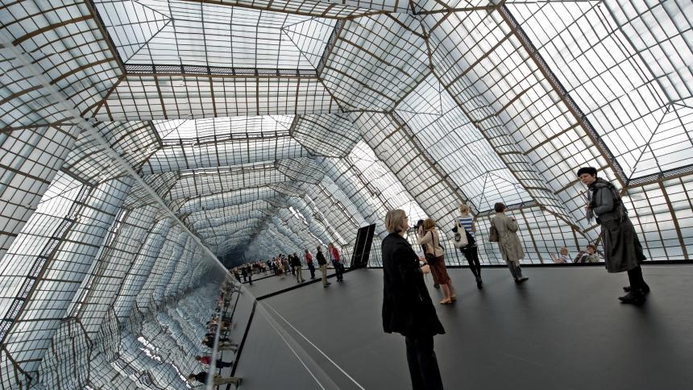
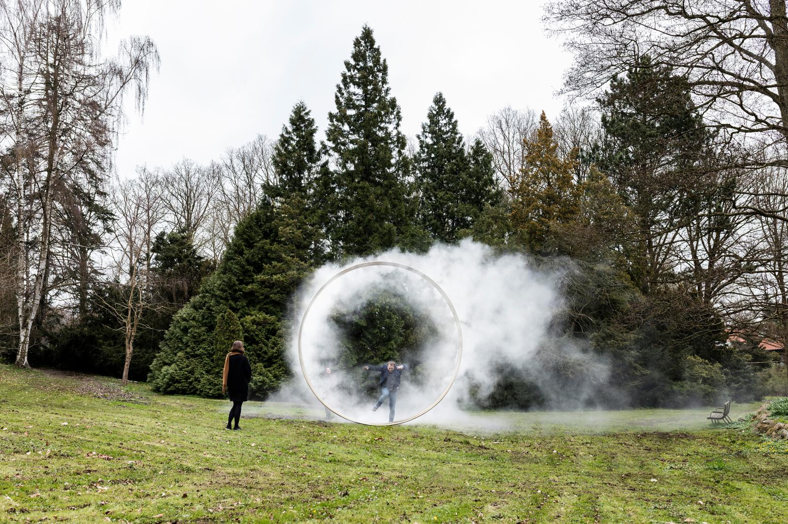
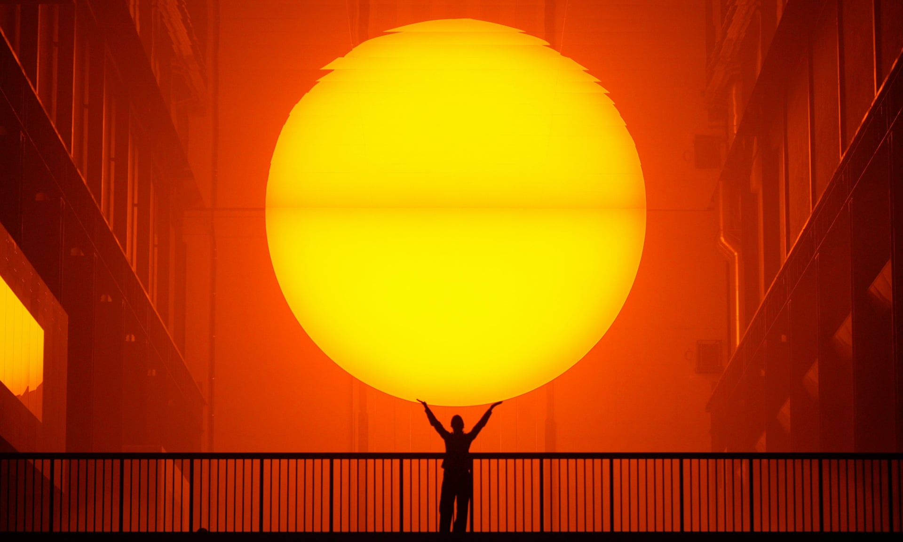
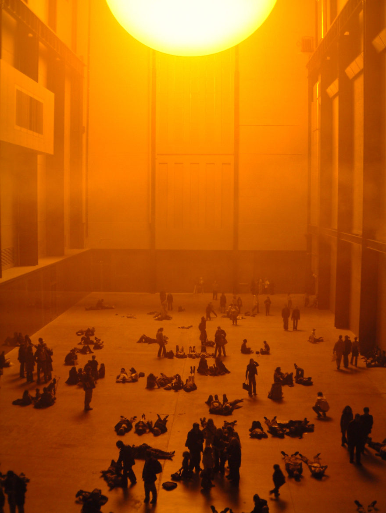
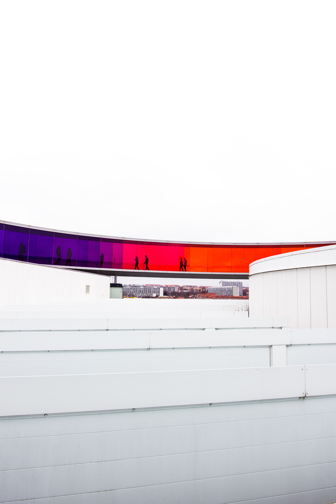
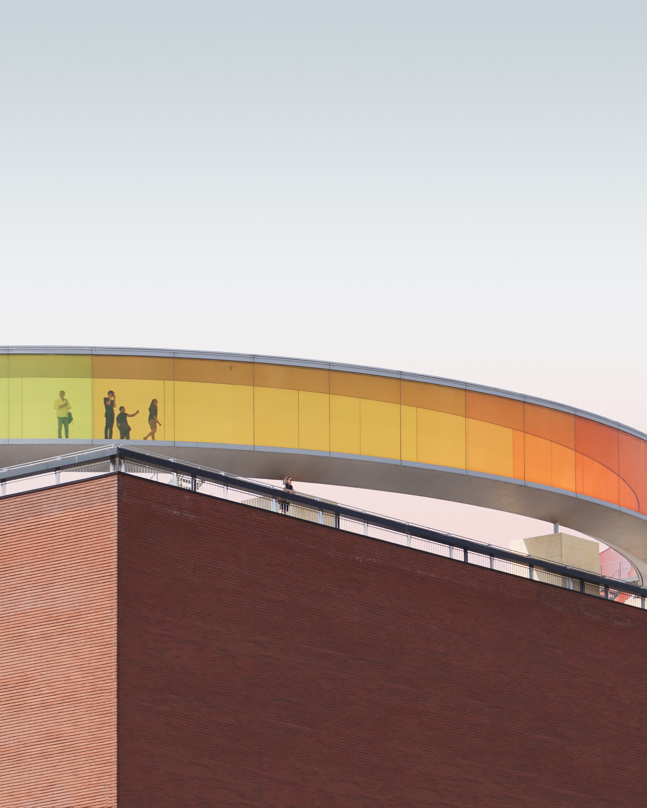
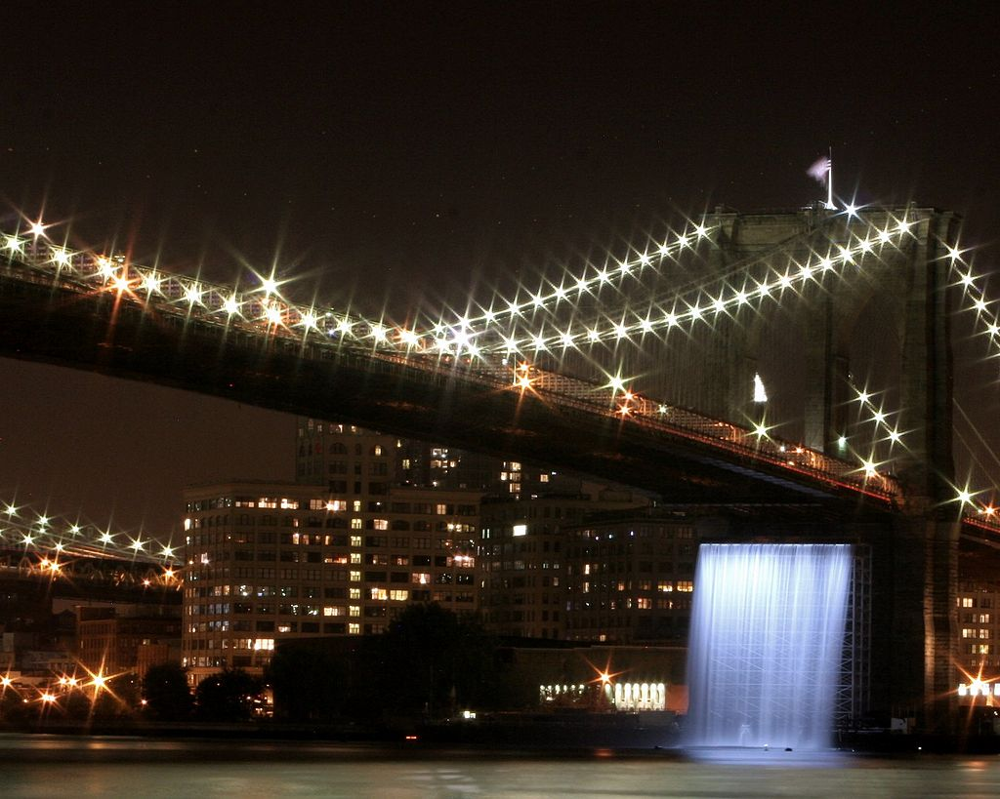

Eternal Sunshine of the Spotless Mind
OLafur Eliasson - a Visual Artist Who Offers More Than Art

Olafur Eliasson. Photo credit: Runa Maya Mørk Huber ;| Studio Olafur Eliasson. © 2017 Olafur Eliasson.
Olafur Eliasson
is а Danish-Icelandic artist born in 1967 renowned for his sculptures and large-scale art installations where he combines materials such as light, water, wood and air temperature to deepen the viewer’s experience. He is also an architect, product designer, film-maker, photographer, culinary artist and eco-activist. Much of his projects explore the common ground between space and nature and art and science. Some of his art installations consider topics as climate change, sustainability, nature and weather, self-awareness and the perception of the reality.
"Ice Watch" outside Tate Modern, 2018. Photo credit: DANIEL LEAL-OLIVAS/AFP
"Inner City Out", Berlin, 2010. Photo credit: Spiegel.de
"Weather the Weather", Denmark, 2016. Photo credit: Anders Sune Berg
Eliasson’s art concept is exploration of a real natural phenomenon, which he interprets in a new and unexpected way and makes it an unforgettable experience for the viewer. Experience is the key word in his art. He often emphasizes that without the viewer there is nothing.
He is passionate about reaching as much audience as possible and involve it in his art projects. The audience is active part of his exhibitions.
"The people who visit my exhibitions are actually the creators of the project content. And this is no coincidence. I was always interested in the question whether we are participants or creators of art as visitors, because in fact our interpretation of any work created by another artist is actually a new form of art."
"Room for One Colour" at Moderna Museet, Stockholm, 2005. Photo credit: Anders Sune Berg

"Contact" at Fondation Louis Vuitton, Paris, France, 2014. Photo credit: Iwan Baan
Every project of Olafur Eliasson is an invitation to go beyond the comfort zone and to explore new worlds. He believes that art can have a strong impact on the world outside the museum. In many of his works the boundaries between the inside and outside are dissolved.
Three Masterpieces of Olafur Eliasson
"The Weather project", 2003

Olafur Eliasson’s artifical sun blazes in the Turbine Hall of Tate Modern, 2003. Photo credit: Dan Chung/The Guardian
The weather project was installed at the London's Tate Modern in 2003 as part of the popular Unilever series. The installation is placed at the open space of the gallery's Turbine Hall.
With this incredible project, as with many of his works, he expresses the relationship between nature and the city and how the nature can be experienced in the city. He recreated a big yellow burning sun inside the Turbine Hall where the visitors can just lay down under it and enjoy the atmosphere it creates. Even dough it looks warm the installation does not give out any additional heat. The room is also filled with mist made of sugar and water. More than 300 mirrors were used for the ceiling so that the visitors could see themselves as tiny black silhouettes against a mass of orange light symbolizing the sun. Eliasson uses light, wind, steam, fire, water and ice and combines these materials with modern technology in unexpected ways. The installation is a kind of escape from the rainy weather outside.

"Your Rainbow Panorama", 2011

Your Rainbow Panorama. Photo credit: Mads Schmidt-Rasmussen/Unsplash.com
Olafur's installation "Your rainbow panorama" is a glass kaleidoscopic circular corridor which consists every color of the spectrum and where you can walk inside. It reminds of a rainbow. It is installed on the rooftop of the ARoS Aarhus Kunstmuseum in Aarhus in May 2011.
The idea of "Your Rainbow Panorama" is inspired by the poet Dante Alighieri’s story in “The Divine Comedy” and is designed as a journey from hell to paradise and the panorama on the rooftop represents the heaven and the perfection. In 2004 ARoS Aarhus Art Museum was designed as a metaphor for the Dante’s poem containing 9 galleries and a spectacular spiral staircase.

The New York City Waterfalls, 2008

"The Waterfall" under the Brooklyn Bridge. Photo credit: Adam Brown/Wikipedia.org
Olafur Eliasson designed four giant waterfalls positioned in four iconic historical places by Manhattan’s East river as public art for the city. He built the waterfalls using the scaffolding technique which is a common feature of Manhattan.
“In developing The New York City Waterfalls, I have tried to work with today’s complex notion of public spaces,” said Eliasson. “The Waterfalls appear in the midst of the dense social, environmental, and political tissue that makes up the heart of New York City. They will give people the possibility to reconsider their relationships to these spectacular surroundings, and I hope they will evoke individual experiences and enhance a sense of collectivity.”
Eliasson's artworks provoke the senses and the creativity of the audience and from passive observer makes us active participants because he wants to establish a sense of “community”, “of being together”, “of democracy”. [See his TED talk “Playing with Space and Light” from 2009.]